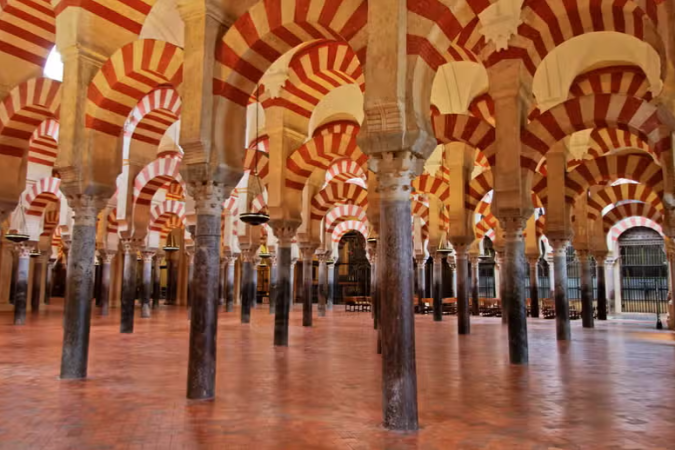
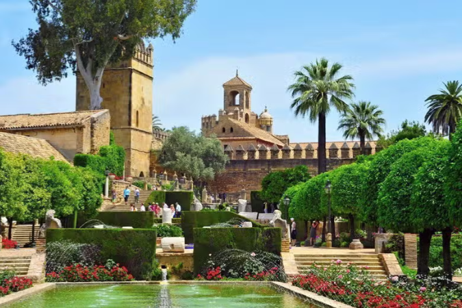

Córdoba es conocida a nivel mundial por su Mezquita-Catedral. Posee un casco histórico monumental declarado Patrimonio Mundial y repleto de callecitas en las que uno querría quedarse, patios llenos de flores, agradables plazas y animadas tabernas en las que disfrutar de un buen espectáculo flamenco o degustar la gastronomía típica.
La Mezquita-Catedral
Es una mezcla de estilos arquitectónicos superpuestos, que se sucedieron a lo largo de los nueve siglos que duraron las construcciones y reformas.
La Mezquita-Catedral de Córdoba, ubicada en pleno centro histórico de la ciudad, es uno de los más bellos ejemplos de arte musulmán en España.

El Alcázar de los Reyes Cristianos
En este palacio-fortaleza gobernaron los Reyes Católicos durante ocho años. Este edificio fue residencia real cristiana, después sede del Tribunal del Santo Oficio, más tarde cárcel civil y por último cárcel militar. Posee magníficos jardines, como el llamado Paseo de los Reyes, donde están las estatuas de todos los reyes que han estado vinculados al alcázar. Fue declarado Monumento Histórico en 1931. Integrado en la zona declarada por la UNESCO como Patrimonio de la Humanidad en 1994. Sus jardines están protegidos por el P.G.O.U. de 1986. Se encuentra sobre los restos del antiguo Alcázar Califal.

Templo Romano
Los restos de este templo están situados junto al Ayuntamiento. Por los vestigios que se observan, parece que fue de grandes dimensiones. Estaba dedicado a los dioses mitológicos. Está situado en el centro de una gran plaza porticada. Elevado sobre un podio de gran altura sobre el que se apoyaban columnas corintias. Se construyó bajo la etapa del emperador Claudio (dinastía Julio-Claudia), aunque se culmina con Domiciano (dinastía Flavia).